Tasarımdan Üretime Uçtan Uca Dijital Dönüşüm
Akıllı tasarım, dijital ikiz, üretim otomasyonu, veri yönetimi ve görselleştirmeyi tek çatı altında birleştiriyoruz. Autodesk Gold Partner ve Adobe Gold Reseller Partner olarak; HP, Microsoft, Chaos ve UltiMaker yetkili iş ortağı sıfatıyla, işletmenizin dijitalleşme yolculuğunun her adımında yazılım, donanım ve danışmanlıkla yanınızdayız.

Autodesk'in tanımıyla dijital dönüşümün çekirdeği veri sürekliliğidir: tasarım aşamasında üretilen bilginin, sonraki her fazda yeniden çizilmeden, yeniden girilmeden kullanılabilmesi. Çoğu kurumda kopma noktası yazılımın kendisi değil, iki yazılım arasındaki elle yapılan aktarımdır.
Bu yüzden dönüşümü tek bir sıçrama olarak değil, beş basamaklı bir olgunluk eğrisi olarak ele alıyoruz: çizim → model → veri → otomasyon → dijital ikiz. Her basamak bir öncekinin ürettiği veriyi tüketir; basamak atlandığında yatırım geri dönmez, çünkü üst basamağın besleneceği veri yoktur.
Cadbim'in rolü bu haritayı sizin süreçlerinize göre çıkarmak ve her basamakta doğru Autodesk, Adobe, HP, Chaos ve UltiMaker bileşenini konumlandırmaktır. Tedarik sürecin başlangıcıdır; kurulum, lisanslama, kullanıcı eğitimi, teknik destek ve yenileme yönetimi tek muhatap üzerinden yürütülür.
Olgunluk analizi
Mevcut yazılım, süreç ve yetkinlik envanteriniz çıkarılır; kopma noktaları somut olarak işaretlenir.
Öncelikli kazanç
En kısa sürede geri dönen adım ilk sıraya alınır; bütçe tek seferde değil, kazanç ürettikçe genişler.
Standart ve şablon
Şablon, adlandırma, klasör ve yetki yapısı en baştan kurulur; dönüşüm kişiye değil kuruma bağlanır.
Ölçülebilir hedef
Her fazda takip edilecek gösterge (çevrim süresi, hata oranı, fire, teslim gecikmesi) önceden tanımlanır.
Her biri resmî yetkili satış ve destek ortaklığımızla desteklenir

Autodesk
Mimarlık, mühendislik ve inşaat sektörlerine yönelik kapsamlı tasarım yazılımları.
Adobe
Yaratıcı içerik üretimi için görsel tasarım ve dijital medya yazılımları.

HP DesignJet
Büyük format teknik çizim ve görsel baskı için profesyonel yazıcı serisi.
HP Workstations
Yüksek performanslı mühendislik ve tasarım iş yükleri için iş istasyonları.

Chaos
Mimari ve endüstriyel görselleştirme için gerçekçi render ve simülasyon çözümleri.
UltiMaker
Prototipleme ve üretim için profesyonel masaüstü 3B yazıcı çözümleri.

SketchUp
Sezgisel arayüzüyle hızlı 3B modelleme ve görselleştirme yazılımı.

Lumion
Mimari projeler için gerçek zamanlı render ve görselleştirme yazılımı.

Microsoft
Kurumsal verimlilik ve bulut altyapısı için yazılım ve hizmet çözümleri.
Sektörünüze özel çözüm kombinasyonlarını inceleyin
Mimarlık
Mimari tasarım süreçlerine özel dijital dönüşüm çözümleri ve iş akışları.
İnşaat & Altyapı
İnşaat ve altyapı projelerinde dijitalleşmeyi hızlandıran çözüm ve araçlar.
Makine & Üretim
Makine imalat sektörüne özel tasarım, simülasyon ve üretim çözümleri sunulur.
Otomotiv
Otomotiv parça ve araç geliştirme süreçlerine yönelik uçtan uca mühendislik çözümleri.
Medya & Eğlence
Medya, animasyon ve görsel efekt üretiminde dijital dönüşüm çözümleri sunar.
Savunma ve Havacılık
Havacılık ve savunma sektöründe hassas mühendislik ve tasarım çözümleri sunar.
Her sütun, birbiriyle bütünleşik çalışan yazılım ve donanım çözümlerinden oluşur.
Mevcut süreçlerinizi analiz ederek dijitalleşmeyi aşama aşama planlıyor ve yürütüyoruz.
Süreç & Olgunluk Analizi
Mevcut tasarım, üretim ve veri süreçlerinizin dijital olgunluk düzeyini birlikte değerlendiriyoruz.
Yol Haritası & Pilot
Önceliklendirilmiş bir dönüşüm yol haritası çıkarır, en yüksek etkili alanda pilot uygulama yaparız.
Uygulama & Entegrasyon
Yazılım, donanım ve veri akışlarını mevcut sisteminize entegre ederek uçtan uca devreye alırız.
Eğitim & Yaygınlaştırma
Autodesk Yetkili Eğitim Merkezi olarak ekiplerinizi yeni araç ve süreçlerde sertifikalandırırız.
Sürekli Destek
Teknik destek ve danışmanlıkla dönüşümü kalıcı hale getirir, yeni çözümlerle genişletiriz.
Ürün geliştirme sürenizi kısaltan, hatayı üretime gitmeden yakalayan tasarım ve mühendislik çözümleri.
Generative Design & Otomasyon
Yapay zekâ destekli üretken tasarım ve kural tabanlı tasarım otomasyonuyla varyasyon üretimini hızlandırın.
Simülasyon & Analiz
FEA ve CFD simülasyonlarıyla tasarımı fiziksel prototipe geçmeden doğrulayın.
Tolerans Analizi
Montaj toleranslarını üretim öncesi analiz ederek uyum ve kalite hatalarının önüne geçin.
BIM
Yapı bilgi modellemesiyle mimari, statik ve tesisat disiplinlerini tek modelde koordine edin.
Sanal modeli sahadaki gerçek varlığa ve üretim hattına bağlayan çözümler.
Dijital İkiz
As-built BIM verisini operasyonel bir dijital ikize dönüştürüp tesisi model üzerinden yönetin.
Fabrika Tasarımı
Yerleşim, hat ve malzeme akışını devreye almadan önce sanal ortamda planlayın ve doğrulayın.
CAM & İmalat
CNC programlama ve talaşlı imalat süreçlerini tasarım verisiyle doğrudan entegre edin.
Eklemeli İmalat & 3D Baskı
Endüstriyel 3D baskı ile prototipten seri üretime kadar üretim yöntemlerini çeşitlendirin.
Nesting
Malzeme kesim planlamasını otomatikleştirerek fire oranını ve üretim süresini azaltın.
Tasarım, mühendislik ve saha verisini tek doğru kaynakta birleştiren yönetim katmanı.
Karar vericilerin projeyi inşa edilmeden önce görüp deneyimlemesini sağlayan çözümler.
Görselleştirme & Render
V-Ray ve gerçek zamanlı render motorlarıyla fotogerçekçi görsel ve animasyonlar üretin.
Gerçeklik Yakalama
Lazer tarama ve fotogrametri ile mevcut yapıyı yüksek doğrulukla dijital modele aktarın.
Yaratıcı İçerik & Tasarım
Adobe Creative Cloud ile pazarlama ve sunum içeriklerinizi kurumsal kalitede üretin.
Yazılımların tüm potansiyelini ortaya çıkaran iş istasyonu, baskı ve 3D yazıcı çözümleri.
HP Workstations
Ağır CAD, simülasyon ve render iş yüklerine göre sertifikalandırılmış iş istasyonları.
HP DesignJet
Geniş format baskı ve tarama çözümleriyle proje çıktılarınızı hızlandırın.
HP Build Workspace
Endüstriyel 3D baskı iş akışını uçtan uca yöneten yazılım ve donanım platformu.
UltiMaker
Prototipleme ve küçük seri üretim için güvenilir masaüstü 3D yazıcı ekosistemi.
Cadbim; Autodesk Gold Partner ve Adobe Gold Reseller Partner, HP, Microsoft, Chaos ve UltiMaker yetkili iş ortağıdır.


Aradığınız yanıt burada yoksa uzmanımıza doğrudan sorabilirsiniz.
Dijital dönüşüme hangi yazılımla başlamalıyım?
Mevcut çizim arşivimiz ne olacak?
Dönüşüm ne kadar sürer?
Eğitim dahil mi?
Tedarik sürecin başlangıcıdır; kurulum, lisanslama, kullanıcı eğitimi, teknik destek ve yenileme yönetimi tek muhatap üzerinden yürütülür.
Esnek Abonelik ve Lisans Modelleri
Tek ve çok kullanıcılı abonelikler, 1 ve 3 yıllık dönemler, koleksiyon avantajı — kullanım profilinize uygun planı birlikte belirliyoruz.
Yetkili Eğitim Merkezi (ATC)
Autodesk Yetkili Eğitim Merkezi olarak sertifikalı eğitimler; İzmir merkez ofisimizde sınıf ve çevrim içi programlar.
Türkçe Teknik Destek
Kurulum, lisans yönetimi ve teknik sorularınızda Türkiye'den, Türkçe, aynı gün yanıt.
Kurulum, Lisanslama ve Aktivasyon Desteği
Yazılımların kurulum, lisanslama ve aktivasyon süreçlerinin tamamında teknik destek sağlıyoruz.
Sürücü ve Uyumluluk Çözümleri
İşletim sistemlerinde sürücü kurulumları ve yazılım uyumluluğu konularında teknik çözüm üretiyoruz.
Dijital dönüşüm yol haritanızı birlikte çıkaralım
Sürecinizi analiz edelim, en yüksek etkili alanı birlikte belirleyelim.